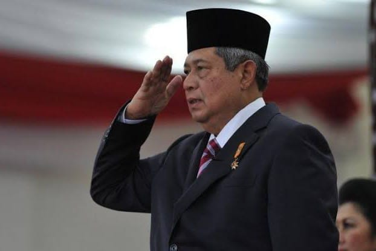

Susilo Bambang Yudhoyono (born 9 September 1949), commonly referred to as SBY, is an Indonesian politician, painter and retired army general who served as the sixth president of Indonesia from 2004 to 2014 and the second Indonesian President from the military after Suharto. He founded the Democratic Party of Indonesia, he served as the 4th leader of the Democratic Party from 2014 until 2020, 8th and 10th Coordinating Minister of Politics and Security Affairs of Indonesia from 2000 until 2001, and again from 2001 until 2004. He also served as the president of the Assembly and chair of the Council of the Global Green Growth Institute. He was also the former chairman of ASEAN due to Indonesia's hosting of the 18th and 19th ASEAN Summits.
Yudhoyono won the 2004 presidential election—the first direct presidential election in Indonesia, defeating incumbent president Megawati Sukarnoputri. He was sworn into office on 20 October 2004, together with Jusuf Kalla as vice president. He ran for re-election in 2009 with Boediono as his running mate, and won with an outright majority of the votes in the first round of balloting; he was sworn in for a second term on 20 October 2009.